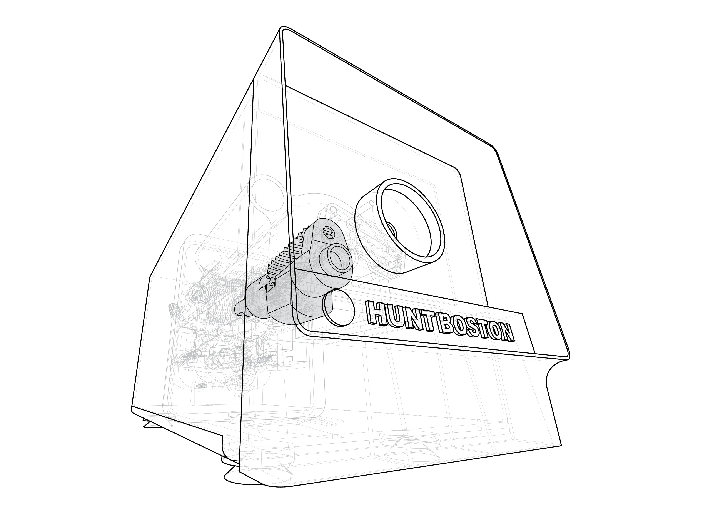
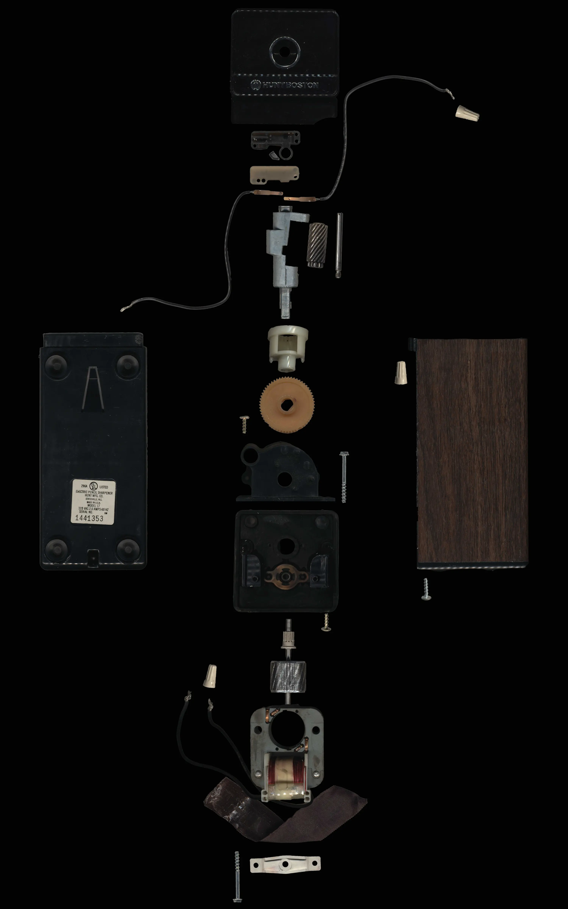

Object of Arresting Novelty
Spring 2026Exploration and representation of an ordinary object in new ways


Manipulative Images
The object I chose was a pencil sharpener. Although it is a simple box from the outside, the parts hidden within made me curious. These images capture the twisting logic of the sharpener.


Array of Parts
Here, the parts that make up the soul of the sharpener are organized to help show how they work together. The parts all follow a linear flow along the central axis, and they are ordered as depicted on the array.